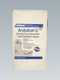
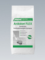
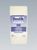
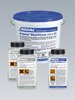
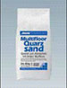

Выравнивающие массы и растворы
Таблица применения:
ГРУНТОВКИ, ГИДРОИЗОЛЯЦИЯ, ВЫРАВНИВАНИЕ ПОВЕРХНОСТИ
 Ардалан N
Ардалан N
Ardalan N
Высококачественная нивелирная масса с низким внутренним напряжением. Саморастекающаяся. Для внутренних работ. Предназначена для сглаживания небольших неровностей и для нанесения слоёв большой толщины под керамическую плитку, ковровые и полимерные напольные покрытия. Предназначена для нивелирования и сглаживания неровностей на бетонных покрытиях, магнезиальных, цементных и асфальтовых (наливных) бесшовных полах, на керамической плитке, мозаичных полах, природном и искусственном камне. Может применяться на полах с подогревом. При нанесении средства Ардалан N на впитывающие поверхности следует нанести предварительный грунтующий слой средства Грундфестигер, при нанесении на невпитывающие поверхности - нанести предварительный грунтующий слой средства Ардапрен.
Низкое содержание солей хромовой кислоты по стандарту TRGS 613.
Giscode ZP 1 Emicode EC 1
Допускает механизированное нанесение.
Толщина слоя: 1- 10 мм - без примесей.
10- 30 мм с добавлением 65% кварцевого песка с зернистостью 0- 4 мм.
При нанесении нескольких слоев толщина одного слоя без примесей не должна превышать 10 мм, а слоя с примесями - 30 мм.
Доступность для прохода: через 2 - 4 часа после нанесения.
Расход : - прим. 1,5 кг/м.кв. /1 мм слоя.
Хранение : в сухом и прохладном месте.
Упаковка: мешок 25 кг

Ардалан UArdalan U
Нивелирующая масса с низким внутренним напряжением для сглаживания неровностей под керамическую плитку, ковровые покрытия и полимерные полы. Саморастекающаяся. Для внутренних работ. Предназначена для нивелирования и выравнивания бетонных покрытий, магнезиальных, цементных и асфальтных (наливных) бесшовных полов, керамической плитки, мозаичных полов, полов из искусственного и природного камня. Может применяться для полов подогревом. В качестве адгезионного слоя на впитывающие поверхности нанести слой средства Грундфестигер , на невпитывающие поверхности - средство Ардапрен .
Низкое содержание солей хромовой кислоты по стандарту TRGS 613.
Giscode ZP 1 Emicode EC 1
Толщина слоя: 1- 10 мм.
Доступность для прохода: через 2 - 4 часа после нанесения.
Расход : - прим. 1,5 кг/м.кв. /1 мм слоя
Хранение : в сухом и прохладном месте
Упаковка : мешок 25 кг
 Ардалан AGM
Ардалан AGM
Ardalan AGM
Выравнивающий раствор для стен и полов. Для внутренних и наружных работ.
Универсальный, обогащенный полимерами ремонтный раствор для выравнивания бесшовных полов (стяжек), бетонных покрытий, лестничных ступеней и поверхностей стен. Может применяться на подогреваемых полах.
Низкое содержание солей хромой кислоты соответствует нормам TRGS 613.
Giscode ZP 1
Толщина слоя:
2- 10 мм - без добавок
10- 20 мм - смешанный с 50% кварцевого песка (зернистость 0-3 мм)
20- 30 мм - смешанный со 100% песка для бесшовных полов (зернистость 0- 8 мм)
Доступность для прохода: через 30 минут после нанесения.
Расход: прим. 1,6 кг /м.кв. / 1 мм слоя
Хранение: в сухом и прохладном месте
Упаковка: мешок 25 кг

Ардалан ФлексArdalan Flex
Высокоэластичная сглаживающая и нивелирующая масса. Укреплена добавлением волокон, обладает низким внутренним напряжением. Предназначена для сглаживания небольших неровностей и для нанесения слоёв большой толщины под керамическую плитку, ковровые и полимерные напольные покрытия. Саморастекающаяся. Для внутренних работ. Предназначена для выравнивания и нивелирования дощатых полов (половых досок), древесностружечных плит (Holzpressspanplatten V 100) и готовых строительных элементов (Trockenausbauelemente). Может применяться на подогреваемых полах. Использовать грунтовки Грундфестигер или Ардапрен .
Giscode ZP 1
Толщина слоя: За один рабочий шаг наносится слоем толщиной 3- 15 мм.
Доступность для прохода: через 4 часа после нанесения.
Расход: прим. 1,6 кг /м.кв. / 1 мм слоя
Хранение : в сухом и прохладном месте
Упаковка : мешок 25 кг

Нибоплан DENiboplan DE
Высококачественная сглаживающая масса с низким внутренним напряжением для создания сглаживающих слоев под керамические покрытия и природный камень. Саморастекающаяся, быстроотвердевающая. Для внутренних работ. Предназначена для сглаживания неровностей на бетонных покрытиях, на цементных бесшовных полах (стяжках), на сульфатнокальциевых стяжках (calciumsulfatgebundenen Estrichen) и старой керамической облицовке. Может применяться на подогреваемых полах. При нанесении на впитывающие поверхности следует нанести грунтующий слой средства Грундфестигер , а при нанесении на плотные и гладкие поверхности следует нанести грунтующий слой средства Ардапрен .
Низкое содержание солей хромой кислоты соответствует нормам TRGS 613.
Giscode ZP 1
Допускает механизированное нанесение.
Толщина слоя: За один рабочий шаг наносится слоем от 5 до 40 мм.
Доступность для прохода: через 1,5 - 3 часа.
Расход : прим. 1,7 кг /м.кв. / 1 мм слоя
Хранение : в сухом и прохладном месте
Упаковка : мешок 25кг
 Шнельэштрих
Шнельэштрих
Schnellestrich
Быстро застывающий, безусадочный сухой раствор для ремонта бетонных полов (стяжек) с увеличенным временем выработки. Для использования внутри и снаружи помещения, в т.ч. во влажных условиях. Повышенная конечная прочность. Несмотря на увеличенное время жизнеспособности, уложенный раствор уже через 3 часа доступен для прохода и через короткое время допускает нанесение последующих покрытий. Для создания монолитных полов (стяжек), бесшовных полов на разделительных и изолирующих слоях, а также полов с подогревом. Используется при проведении срочного ремонта бетонных полов на промышленных объектах.
Estrichgüte CT - C35 - F6 соответствует нормам DIN EN 13813.
Giscode ZP1
Допускает механизированное нанесение.
Толщина слоя: прим. 25 – 80 мм.
Доступность для прохода: прим. через 3 часа.
Последующие работы:
Нанесение паропроницаемых покрытий: прим.через 24 часа (при 20°С и относительной влажности 65%)
Нанесение паронепроницаемых покрытий: прим.через 48 часов (при 20°С и относительной влажности 65%)
Расход: 1,8 кг/м.кв./ на 1 мм слоя
Хранение: в сухом и прохладном месте
Упаковка: мешок 25 кг
Шнельэштрих Концентрат
Schnellestrich Konzentrat
Специальное вяжущее средство для изготовления быстросхватывающихся, высокопрочных и быстро допускающих укладку последующих покрытий цементных стяжек. Для использования внутри и вне помещений, а также в сырых мокрых помещениях. Сокращает время схватывания стяжки, обеспечивает безусадочность и высокую конечную прочность стяжки. Уже прим. через 3 часа стяжка доступна для прохода и прим. через 24 - 48 часов допускает нанесение последующих покрытий. Для связанных стяжек, стяжек на разделительном и стяжек на изоляционном слое, а также стяжек полов с подогревом в условиях ограниченного времени для укладки.
Giscode ZP1.
Расход: на 25 кг средства прим. 100 - 125 кг песка для стяжек 0/8 (DIN 4226).
Хранение: в сухом и прохладном месте.
Упаковка: мешок 25 кг

Унипокс МультиполUnipox Multifloor
Низковязкий вяжущий материал на основе эпоксидной смолы для изготовления материалов полимерных бесшовных полов (стяжек) и ремонтных растворов. Не содержит воду и растворители.
Быстро отвердевает, даёт малую усадку, обладает малым внутренним напряжением. Вяжущий материал с исключительно высокой адгезией почти ко всем основам для изготовления обладающих высокой химической и механической стойкостью стяжек и ремонтных растворов. Применяется так же, как эпоксидная грунтовка и пропитка, как адгезионное средство для соединённых стяжек (Verbundestriche) и для заделки трещин в стяжках.
Giscode RE 1
Расход: зависит от применения, см. техническое описание
Хранение: в сухом и прохладном месте
Упаковка: ведро 1,2 кг (комп. А - 2 банки по 0,4 кг; комп В – 1 банка 0,4кг)

Мультипол КварцзандMultifloor Quarzsand
Кварцевый песок с зернистостью от 0,1 до 3 мм. Применяется в смеси с Унипокс Мультипол.
Пропорция смешивания: 25 кг Мультипол Кварцзанд на 1,2 кг – 2,4 кг Унипокс Мультипол.
Расход смеси: прим. 1,7 кг/м.кв./ на 1 мм слоя.
Хранение: в сухом и прохладном месте.
Упаковка: мешок 25 кг